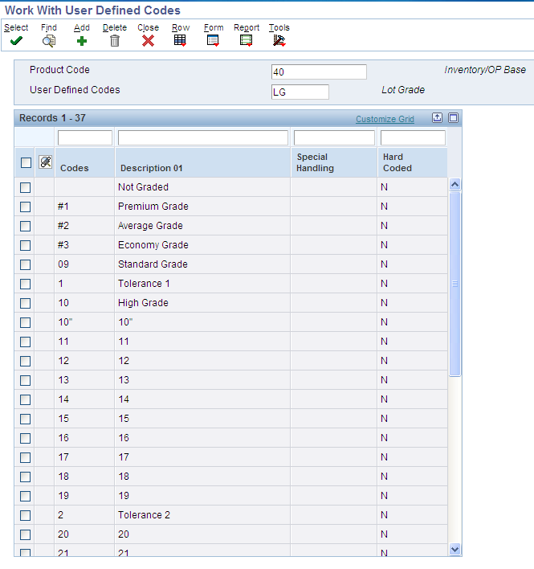
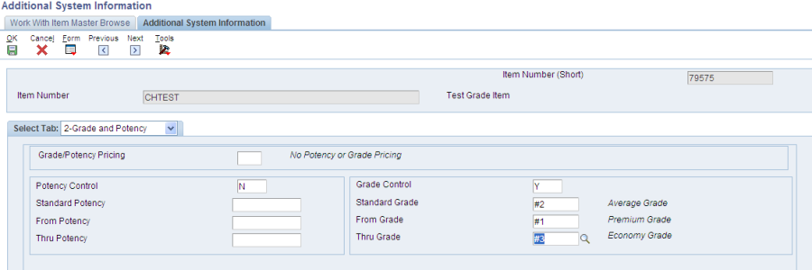
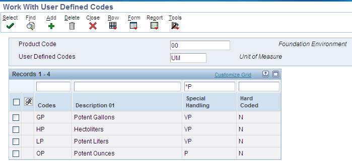
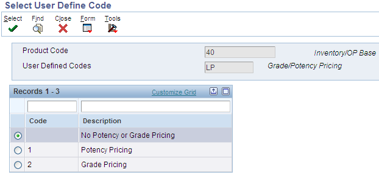
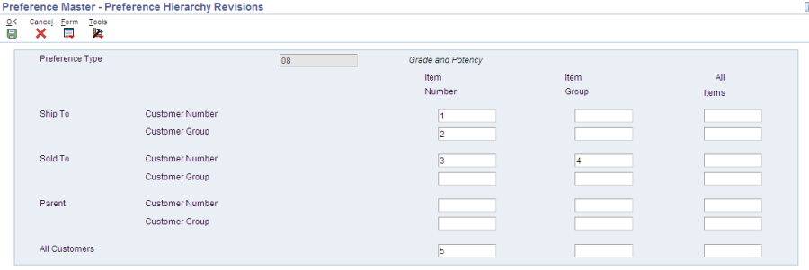
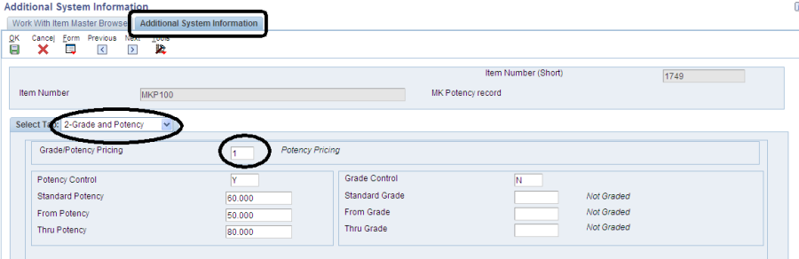
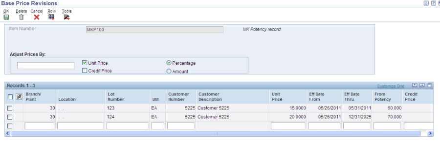
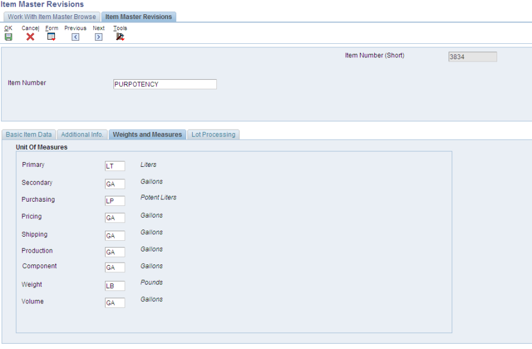
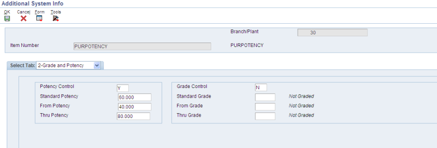
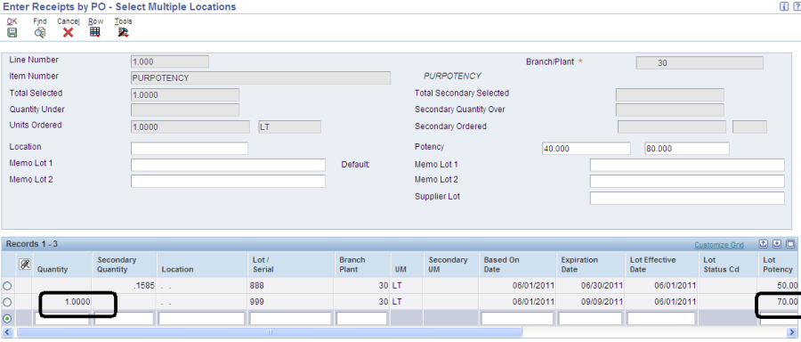

Note : During setup if you see Error 3349 , Cannot Convert UOM back to Primary, ensure that UOM conversion for primary is set before you set the potency UOM conversion.
Grades enable items to be classified, for example, grade A eggs and grade AA eggs. Potency allows a percentage of an active ingredient in a product to be specified, for example the percentage of alcohol in cough syrup.
When grade or potency control is activated for an item, a standard grade or potency can be entered for the item along with a range of acceptable values. If items are received that are not within the acceptable range, the system displays a warning message. A sales order can not be created for items that are not within the acceptable range.
Acceptable grade or potency ranges for each of customer can be specified using preference profiles. Item grade and potency values are applicable only to items that are produced in lots. Both grade control and potency control cannot be used for the same item. The grade or potency of all items in a lot can be specified on Work With Lot Master (P4108). If a grade or potency is not specified, the system uses the standard grade or potency entered on the Additional System Information form of the Item Master (P4101) or Item Branch (P4102) applications.
Bulk products cannot be selected by grade or potency or load confirmed by lot, hence Grade and Potency should only be setup and used for packaged items.
All items that are grade or potency controlled will be produced in lots. Grades can be used to classify items. If grade control is turned on in the Item Master (P4101) or Item Branch (P4102), the system edits for grades and will not perform transactions if the items involved do not meet the grade standards. Both grade and potency control cannot be used for the same item.
To use Grade Control (OT2Y) perform these setup steps:
Define grades to be used in the user defined code table 40/LG.

Set up grade control fields, accessed by taking the Additional Information row exit the Item Master Information screen and selecting the Grade/Potency tab:

Potency refers to the active ingredient in a product. For example, alcohol is the active ingredient in rubbing alcohol but only comprises a percentage of the whole product. Ten percent of the entire product may be potent. If potency control is turned on in the Item Master (P4101) or Item Branch (P4102), the system edits for potency and will not perform transactions if the items involved do not meet the potency standards. Both grade and potency control cannot be used for the same item.
To use Potency Control (OT1Y) perform these setup steps:
Define units of measure to measure potent items. Use the user defined code table 00/UM. For each potent unit of measure defined, enter 'P' in the second space of the Special Handling Code field of the User Defined Code screen.

Define a conversion for each potent unit of measure to the volume unit of measure of the item. For example, one potent gallon is always equal to one gallon. Use the Unit of Measure Conversions screen (P41002).
Set up Potency control fields, accessed by taking the Additional Information row exit the Item Master Information screen and selecting the Grade/Potency tab:
Note : During setup if you see Error 3349 , Cannot Convert UOM back to Primary, ensure that UOM conversion for primary is set before you set the potency UOM conversion.
A price may be different based on the grade or potency of a product being sold. In order to activate Grade/Potency Pricing, go to the Item Master (P4101) and take the Additional Information row exit. On the Grade and Potency tab there is a field for Grade/Potency Pricing. A value of '1' in this field activates Potency Pricing; a 2 activates Grade Pricing, a blank value means that no price change will be done based on grade or potency.

Grade Pricing functionality was not designed to price based on the grade assigned to the lot. It was designed to price based on the grade range assigned to the sales detail line. The grade range assigned to the sales detail line can be:
1. defaulted from the item/branch, or
2. preferenced in.
When an order is entered, it is not necessarily expected that a lot will be assigned at that time. It is expected that a customer will request an acceptable grade range or a specific grade that they are willing to purchase. In this case, pricing will ensure that the price being retrieved is within the range specified on the sales detail line and is also the price associated with the lowest grade within the range.
Possible Alternatives:
1. The client could change the item price level from item/branch to item/branch/location/lot. They could then assign a price to each lot and not use grade pricing.
2. They could preference in the grade range based on customer or customer group. Grade pricing would still be used as it would then retrieve either the specific grade price (if the from and through value were the same) or the lowest acceptable grade price (if the from and through were different).
When using the Inventory Adjustments (P4114) program to adjust in quantity for a Potency Item, go to the processing options. If Processing Option # 3 on the process tab is set to 1, the Grade and Potency fields will be displayed.

If a Grade or Potency is not entered into the field, the Standard Grade/Potency will default into the transaction. Also, if an item is setup as Grade or Potency controlled in Item Master or Item Branch, then it is recommended to setup Grade and Potency in P4108 as well.

The Lot Grade/Potency can be changed on the Lot Master (G4113 / P4108). This will only affect future transactions.
You may use the Reclassifications Transactions program (P4116) to change the Lot Grade/Potency to a new lot and different Lot Grade/Potency. You can reclassify only uncommitted quantities of items and lots.

To setup a specific Grade or Potency for an Item and Customer go to menu G4231 to the Preference Master (P40070) and find Preference Type 08.

Click the Hierarchy row exit to make sure that it is setup for the Customer/Item combination desired, and then click OK.

Click Select, and then click Add to create a customer/item preference. In this case, a preference will be created for a specific Item/Customer combination.

In this example, the item's standard potency is 60, but this customer needs the potency between 70 and 80 and will accept product that is past its expiration date.
Remember to setup a version of Preference Processing Options (R40400) with the Grade/Potency processing option activated.

This version of Preference Processing Options (R40400) will be called from Sales Order Entry (P4210).
The Advanced Preference Type is 25. Also the wording on the expiration date has changed to Days Before but still represents how many days until a product is expired. This allows for setup where one specific customer may allow products that are within a week of expiration where another customer may need a product that expires in two weeks or more. This is the purpose of the days before value to return only products that is within the grade/potency threshold and date timeframes will be brought into the order.

Potency/Grade Pricing is activated in the Item Master, by selecting the Additional System row exit and going to the Grade/Potency tab.

Once that is set, go to the Price Revisions row exit and Add a new price. An additional field for Grade or Potency will be displayed.

In this example, Item MKP100 for Customer 5225 will be priced at $10.00 for a Potency of 70.
Note: Notice that there is no LOT number field at this time. Why? This is because the Price levels for the item is not set to be 3 in Item Master. That is, the costing is not being done at Item / Branch /Location/ Lot level. clients would normally have multiple lots, each with a different Potency and Price.
Note: The Adjust Prices By field is designed to modify existing base price records only.So when you enter the form in the Add mode this field will be disabled. For further information on this field and how to use it , you may need Advance Pricing setup.
Set the processing options behind Sales Order Entry (P4210) to look at
1. the version of Preference Processing Options (R40400) setup for Grade/Potency. This is required if any customer/item preferences have been setup.
2. also, preferences must be activated on the Preference tab.
At this time, for demonstration purposes, the price levels in Item Master , have been set to 3. (Item/Branch/Location/Lot) and hence we are able to sepcify Prices by Lots as seen the screen shot below: Note: remember that customer 5225 acceptable potency is between 70 and 80 (Preference Master- Grade and Potency Profile revisions screen shot above)

Add a Sales Order and select Lot Number 123, Notice the, Warning: No Base Price in Effect, Error 2394, is displayed. This is because
1. Customer 5225s acceptable potency is between 70-80
2. SO has Lot 123 which has a potency of 60

Note: The program will allow this order to go through, simply because the lot number was entered on the line as an override. If the lot was selected through the commitment program, this lot would be ignored.
The potency in the Base Price Revisions (P4106) is used to select the correct price for the specific potency.
In procurement, potency is used in the price calculation when Potency Pricing is activated. Standard Potency is defined as a default. If a higher Potency item is purchased, the price should be higher than the standard potency price. If a lower Potency item is purchased, the price should be lower, in comparison to the standard potency price. To demonstrate this, a new item was created.
Item Master (P4101)

With a Primary Unit of Measure of Liters, pricing Unit of Measure of Potent Liters (potency UOM).

Setup a 1 to 1 conversion, just to keep things simple.

Once again, use the 00/UM UDC table to define a potency unit of measure. For each potent unit of measure defined, enter 'P' in the second space of the Special Handling Code field of the User Defined Code screen.

Setup the Standard Potency and the From and Thru Potency values, also the Grade/Potency Pricing is activated here.

Item Branch (P41026)
Item Branch/Plant has the same Potency settings; the Standard Potency is always pulled from the Item Branch/Plant record.

Setup two different locations.

The first location has a Lot Potency of 50.

The second location has a lot potency of 70.
Again, the Lot Potency value for each location must be set to a number between the From and Thru Potency. If a number outside of the range is selected a warning will be displayed:

Setup a Cost for the item - in this case Standard Cost is being used for simplicity.

Purchase Order Entry (P4310)
Pricing in Purchase Order Entry ALWAYS uses the Standard Potency.

The Unit Cost with Potency Pricing is calculated as:
Cost ($100) / Standard Potency Percentage (.6) = $166.67
Purchase Order Receipts (P4312)
In P.O. Receipts (P4312), go to multiple locations and pick the location with a potency of 70.

At time of receipt, the difference between the Standard Potency and the Lot Potency is taken into account.
The Lot Potency (70%) - Standard Potency (60%) = difference in Potency (10%).
The Variance is then calculated as = Cost ($100) / Standard Potency Percentage (.6) * Difference in Potency (.1) = $16.67
The Received Not Vouchered = Cost ($100) + Variance ($16.67) = $116.67

In the above example, if Quantity other than 1 is used. Then the calculation is Variance ($16.67) * Quantity (2) = 33.33
Selecting a lot with the lesser (50%) Potency.

Then a -10% difference or a variance of $-16.67 calculated.
Received Not Vouchered = Cost ($100) + $-16.67 = $83.33
Question 1: The system shows no availability in both Summary Availability and Detail Availability (P41202) when grade or potency control is turned on in Additional System Info. This only happens for those lots that are stored in a primary location and potency or grade are outside the accepted range.
Answer 1: The system is working as designed. When grade or potency is out of the acceptable range, the system prevents those items from being transacted. Since many transactions default to the primary location, the system is designed to only count items in secondary locations as available when grade or potency are not accepted.
Question 2: The Grade and Potency Preference incorrectly places items on backorder under the following scenario:
Why is this occurring when there are enough items available (10) to meet the order quantity (10) of the second customer?
Answer 2: The issue occurs because the Soft Committed Quantity (3), in the Primary Location which has no grade, is subtracted from the Grade B Quantity on Hand (10) before the quantity ordered (10) is subtracted from the Grade B Quantity Available.
This issue has been reported in Bug 11708841 (P4210 BACKORDERS QTY FOR ITEM LOT GRADE WHEN QTY AVAILABLE) which revealed a design flaw in availability checking when the Grade and Potency preference is used and Branch Plant Constants (P41001) Availability Definition has the checkbox for Quantity Soft Committed (DA01) to SO checked. Bug 11708841 will be evaluated as an enhancement.
There are four available alternatives to work around the issue:
Question 3: When is a 'CP' (Change Potency) record inserted in the Item Ledger (P4111)?
Answer 3: If the lot potency is updated using the Lot Master (P4108), a record of this update is written to the item ledger with a document type which can be specified. If no document type is specified in this processing option, then the system will use "CP"
Check the processing options on the Lot Master Version as follows:
There are some programs such as PO Receipts Entry (P4312) which allow a user to change the potency field during transaction processing. This will update the Potency value on the Lot Master (F4108) record, but will not insert a Potency Change (CP) record to the Item Ledger (P4111)